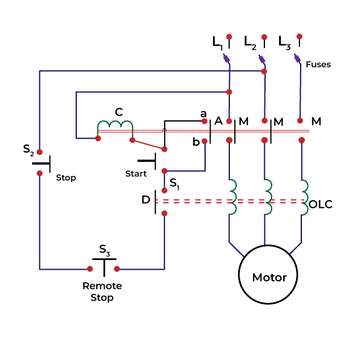

DOL (Direct On-Line) starters are commonly used in industrial applications for starting small motors like compressors, conveyors, pumps, and fans up to 5 HP. They offer a simple, cost-effective solution by directly connecting the motor to the power supply. Dol starters are majorly used in applications that require high initial currents and voltage levels such as driving a maize milling machine and in most pump systems.
Below is a wirng diagram of a DOL Motor starter
At Stanley Kr, we specialize in providing comprehensive services for your industrial needs, including design, quotation, and installation services. Our team of experts is dedicated to delivering customized solutions tailored to your specific requirements. Contact us today to learn more about how we can help you improve your operations and achieve success.